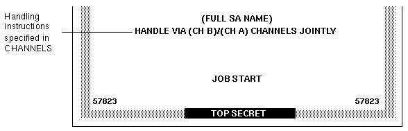

| Previous | Next |
1. Labels in Trusted Extensions Software
3. Making a Label Encodings File (Tasks)
4. Labeling Printer Output (Tasks)
Security Text on Banner and Trailer Pages
Specifying the Protect As Classification
Configuring Security Text on Print Jobs (Task Map)
How to Specify the Words in PRINTER BANNERS
How to Specify Handling Instructions in CHANNELS
How to Set a Minimum Protect As Classification
5. Customizing LOCAL DEFINITIONS
6. Example: Planning an Organization's Labels
Specifying Channels
The CHANNELS section in the label_encodings file defines the lines that can appear below the PRINTER BANNER lines on the lower third of the banner and trailer pages. The CHANNELS section can be specified to print a string whenever the label of a print job contains a certain compartment.
Commercial sites can customize the text in the CHANNELS section with any compartment bit. Figure 4-7 shows a CHANNELS warning on a print job's banner page at a commercial site.
Figure 4-7 Commercial Use of CHANNELS on Banner Page

In U.S. government installations, the channels lines of the banner page conventionally show the warnings that are associated with the compartments of the job's label. Figure 4-8 shows a typical CHANNELS warning on a print job's banner page at a government installation: HANDLE VIA (CH B)/(CH A) CHANNELS JOINTLY.
The following discussion shows how the CHANNELS string HANDLE VIA (CH B)/(CH A) CHANNELS JOINTLY is specified for a job whose label includes the compartment words A and B. For the purpose of the example, only (CH A) and (CH B) apply. However, since the compartment bit for a third channel (CH C) is included in their definitions, (CH C) is also mentioned in this discussion.
The example illustrates these features:
Two compartment bits are associated individually with one set of words and together with another set of words
A third compartment bit is included with the encodings for the first two bits
One suffix is defined for whenever any combination of one or more channel words is in the label
Another suffix is defined for when a single channel word is in the label
A third suffix is defined for when more than one channel word is in the print job's label
Figure 4-8 U.S. Government Use of CHANNELS Specification on Banner Page
As shown in the following example, two suffixes CHANNELS JOINTLY and CHANNELS ONLY and a prefix HANDLE VIA are defined.
Example 4-3 Suffixes and Prefixes in the CHANNELS Section in a Government label_encodings FileCHANNELS: WORDS: name= CHANNELS JOINTLY; suffix; name= CHANNELS ONLY; suffix; name= HANDLE VIA; prefix;
After the prefixes and suffixes are defined as in Example 4-3, the channel names (CH A), (CH B), and (CH C) are specified in two different ways to achieve the following results:
Whenever any one of the three compartment bits associated with channels is in the label, the HANDLE VIA: prefix is printed.
When only one of the three compartment bits associated with channels is in the label, the CHANNELS ONLY suffix is printed after the channel name (CH A), (CH B), or (CH C).
When more than one compartment bit that is associated with channels is in the label, the prefix is followed by the channel names separated by a slash (/). This channel name is then followed by the CHANNELS JOINTLY suffix.
The first three lines that define CHANNELS words in Example 4-3 are repeated in Example 4-4. The second examples focuses on how (CH A), (CH B), and (CH C) are encoded to appear with the CHANNELS ONLY suffix:
(CH A) is encoded with bit 0 on and bits 1 and 6 explicitly set to off using the tilde (~): 0 ~1 ~6
(CH B) is encoded with bit 1 on and bits 0 and 6 explicitly set to off using the tilde (~): ~0 1 ~6
(CH C) is encoded with bit 6 on and bits 0 and 1 explicitly set to off using the tilde (~): ~0 ~1 6
CHANNELS: WORDS: name= CHANNELS JOINTLY; suffix; name= CHANNELS ONLY; suffix; name= HANDLE VIA; prefix; name= (CH A); prefix= HANDLE VIA; suffix= CHANNELS ONLY; compartments= 0 ~1 ~6; name= (CH B); prefix= HANDLE VIA; suffix= CHANNELS ONLY; compartments= ~0 1 ~6; name= (CH C); prefix= HANDLE VIA; suffix= CHANNELS ONLY; compartments= ~0 ~1 6;
The first three lines of channel name definitions in the CHANNELS section that is shown in Example 4-4 have the following results:
The HANDLE VIA prefix and the CHANNELS ONLY suffix are printed when one of the words that is associated with bits 0, 1, and 6 elsewhere in the label_encodings is in the job's label
The HANDLE VIA prefix and CHANNELS ONLY suffix are printed:
With (CH A) when compartment bit 0 is turned on in the label and compartment bits 1 and 6 are off
With (CH B) when compartment bit 1 is turned on in the label and compartment bits 0 and 6 are off
With (CH C) when compartment bit 6 is turned on in the label and compartment bits 0 and 1 are off
The last three lines that define CHANNELS WORDS in Example 4-4 are repeated in Example 4-5. The repetition shows how (CH A), (CH B), and (CH C) are encoded to appear with the CHANNELS JOINTLY suffix when more than one of the words associated with bits 0, 1, and 6 is in the job's label. A slash is inserted between the channels names when more than one of the bits defined in the channels section is in the job's label.
name= (CH A); prefix= HANDLE VIA; suffix= CHANNELS ONLY; compartments= 0 ~1 ~6; name= (CH B); prefix= HANDLE VIA; suffix= CHANNELS ONLY; compartments= ~0 1 ~6; name= (CH C); prefix= HANDLE VIA; suffix= CHANNELS ONLY; compartments= ~0 ~1 6; name= (CH C); prefix= HANDLE VIA; suffix= CHANNELS JOINTLY; compartments= 6; name= (CH B); prefix= HANDLE VIA; suffix= CHANNELS JOINTLY; compartments= 1; name= (CH A); prefix= HANDLE VIA; suffix= CHANNELS JOINTLY; compartments= 0;
The CHANNELS specification in Example 4-5 illustrates the importance of order when compartments are being encoded. The first three lines handle the cases when only one of the channels compartment bits is turned on, so the last three lines can handle cases when more than one bit is turned. Therefore, none of the last three lines need to have any compartment bits explicitly set to 0. The result of these last three lines is that the suffix CHANNELS JOINTLY is always printed when any of two or more of the three compartment words that are associated with the channels is in the label.
(CH C) is printed with CHANNELS JOINTLY when bit 6 is turned on, and either of bit 0 or 1 or both are also turned on.
(CH B) is printed with CHANNELS JOINTLY when bit 1 is turned on, and either of bit 0 or 6 or both are also turned on.
(CH A) is printed with CHANNELS JOINTLY when compartment 0 is turned on, and either of bit 6 or 1 or both are also turned on.
The following example shows that compartment bit 6 is associated with the label word CC.
Example 4-6 Label WORDS Associated With Compartment Bit 6SENSITIVITY LABELS: WORDS: . . . name= CC; minclass= TS; compartments= 6;
Example 4-7 shows that compartment bit 1 is associated with the sensitivity label word B.
Example 4-7 Label WORDS Associated With Compartment Bit 1SENSITIVITY LABELS: WORDS: . . . name= B; minclass= C; compartments= 1;
Example 4-8 shows that compartment bit 0 is associated with sensitivity label word A.
Example 4-8 Label WORDS Associated With Compartment Bit 0SENSITIVITY LABELS: WORDS: . . . name= A; minclass= C; compartments= 0;
To sum up, the channels line prints as HANDLE VIA (CH B)/(CH A) CHANNELS JOINTLY because of the following specifications:
HANDLE VIA is defined to always appear with any CHANNELS word
The sensitivity label has two access-related words, A and B, that are associated with two compartment bits, 0 and 1.
Because two of the bits that are defined for CHANNELS words appear in the job's label, the CHANNELS WORDS (CH A) and (CH B) are followed by CHANNELS JOINTLY.
Any string that should print before the channel name is specified as a prefix. Any string that should print after the channel name is specified as a suffix.
For a sample CHANNELS planner, see Planning the Channels in a Worksheet.
| Previous | Next |